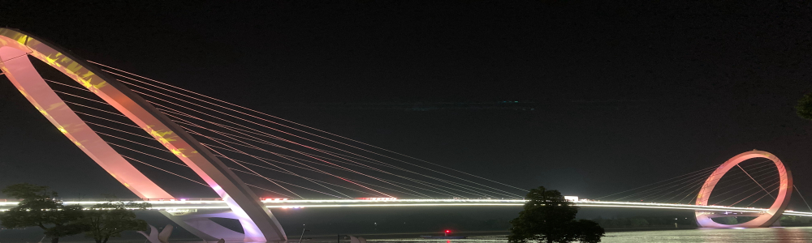

Southeast Winter Seminar Series
Date: Jan 29, Feb 5, Feb 12, Feb 19 in 2021
Venue: Online by Zoom
Introduction
Owing to rapid progress in theoreticla physics, a broad range of questions will be made possible to answer in the near future. To discover and explore new research directions, we organize a series of seminars by inviting young experts of each field and exchanging ideas. We cover the topics in condensed-matter, high-energy and mathematical physics.
All seminars are given online. Participants are not needed to register in advance. The talks are by invitation only.
Invited speakers
- Shailesh Lal (Porto)
- Keita Nii (Yukawa)
- Paul-Konstantin Oehlmann (Uppsala)
- Tadashi Okazaki (Durham)
- Sarthak Parikh (Caltech)
- Achilleas Passias (Oxford)
- Dario Rosa (KIAS)
- Zhi-Wei Wang (CP3-Origins)